波场正演与频散分析
界面操作与完整案例手册
每个案例把同一组参数、输入审核和最终正演结果一一对应。覆盖主动/被动、线阵/二维面阵、规则 DAS 面阵与逐通道真实光缆，并给出可直接载入界面的 TOML/CSV。
1. 启动与标准流程
界面不是只做 preflight。它在一个会话中完成输入、审核、正演、有限记录噪声互相关、频散能量、理论曲线、拾取和结果保存。
conda run -n seisloc wavedispx-ui
建立算例
模板起步、上传 TOML，或在 cell-like 表单中修改模型、Geometry、源与处理参数。
输入审核
先看模型、密度、源—检几何、源时序/PSD、理论频散窗口和采样检查。
运行
逐阶段运行正演、观测/NCF、频散拾取、保存；或点击“一键运行全部”。
结果导出
保存 TOML、HDF5、坐标、拾取、收敛表、manifest 和完整六联汇总图。
截图阅读：本手册先给出完整参数页，再给出同一算例的完整审核页和最终结果图。图片没有使用固定高度或裁剪；点击可放大。
2. 参数输入地图
界面中每个参数标签右侧的 ? 都有中文 hover tip，包含物理意义、单位和常见影响。下表说明参数组与正演流程的关系。
| 参数组 | 界面输入 | 进入哪一步 | 重点检查 |
|---|---|---|---|
| 速度—密度模型 | 层厚、Vp、Vs、ρ、Qp、Qs | 离散波数法 Green 函数、理论频散 | Vp > Vs、末层为半空间、单位正确 |
| 接收器 Geometry | 线阵、二维面阵或 x_m,y_m CSV | 距离采样、孔径、空间混叠 | 台数、孔径、源检零距、径向分箱 |
| DAS 测量 | 统一标距/方位，或逐道中心、端点、标距、方位 CSV | 端点水平位移差→轴向应变/应变率 | 端点中点、标距、通道方向、第一标距零点 |
| 主动源 | 炮点、分量、Ricker 主频、fmax、dt、记录时长（0=自动） | 炮集与 Rayleigh/Love 成像 | Nyquist、慢群速度到时、真实 df、频带 |
| 被动源空间分布 | 源环、源线或 CSV；源数、种子、方位采样 | 有限记录照明与 Green 传递函数 | 方位缺口、源—检距离、独立源数 |
| 噪声时间与 PSD | 时长、dt、窗长、PSD、随机种子 | 混合接收器记录与 NCF | 独立窗数、相关窗长度、PSD 覆盖 |
| 频散处理 | phase shift / Hankel-FJ、f、c、dc、taper | 频散能量和拾取 | 理论曲线是否落在扫描窗内 |
| 高级计算 | workers、分块、径向插值、归一化、补零 | 速度、内存和数值误差 | 先保留模板值，再做敏感性测试 |
时间域还是频率域：DWM 核在复频率—水平波数域求 Green 函数，不做逐时间步推进；但当前主动频散来自有限炮集 FFT，被动频散来自有限窗混合记录的接收端 NCF，所以时长仍是物理参数。主动 record_duration_s=0 会按模型群速度、最大偏移、处理最低频率和至少约 20 个真实频率单元自动设计；被动 window_s 控制单窗传播/df，duration_s 控制随机统计收敛。zero_padding 只加密显示。
f-v 范围：输入审核会在用户裁剪窗之外计算源带内多模态理论曲线，并结合源谱、阵列孔径、径向采样、空间混叠和 DAS 标距给出紫色虚线建议窗。建议只提示，不静默改写输入；显式时长过短属于 required failure。
3. Line、Array 与文件 Geometry
参数设计｜线阵
输入 x 起点、终点、间距和固定 y。适合一维测线，空间采样含义直接，计算速度最快。
参数设计｜二维面阵
分别设置 x/y 起止和间距。主动源使用实际径向源距；被动源把台站对按 distance_bin_m 归并。
文件输入｜CSV
任意二维阵列使用 x_m,y_m 两列。界面提供模板下载；坐标必须有限且不能重复。
面阵预检：主动面阵的空间采样用“唯一径向源距的中位间隔”估计；被动面阵用“台站对径向距离箱宽度”估计。频散成像看到的是这些径向采样，而不是笛卡尔最近台距本身。
DAS 的两种布局：geometry_mode=uniform 在每个 line/grid 中心放置相同方位的平行标距；geometry_mode=channel_file 从 CSV 逐道读取两个真实端点，允许转弯与变标距。后者仍是离散测量段，不是连续光纤有限元。
当前边界：二维/不规则阵列在频散阶段按距离做径向平均，不保留方位各向异性。如果目标是方向性频散，应先按方位扇区分组。
4. 可直接输入的观测系统示例
下面不是格式示意，而是一套已校验、可直接运行的文件输入。接收器、主动炮点和被动噪声源都有明确的平面坐标；CSV 可在文本编辑器、Excel 或 GIS 中生成。
| 文件 | 关键列 | 本例内容 | 程序如何使用 |
|---|---|---|---|
receivers.csv | receiver_id,x_m,y_m | 21 个轻微弯曲的不规则线阵接收点 | receiver_id 只用于识别；正演读取 x/y 并计算实际源检距。 |
shots.csv | shot_id,x_m,y_m | S001=(0,0)、S002=(-120,0)、S003=(120,0) m | 界面载入多炮表后选择一炮；当前计算核心为“一炮一个算例”。 |
noise_sources.csv | source_id,x_m,y_m | 48 个围绕阵列的指定噪声源 | layout=file 时逐行使用给定位置，不再用空间种子随机放置。 |
多炮的边界要说清楚：Shot CSV 可以保存整个观测系统，但一次正演会在界面中选择其中一行。输出 input.toml 把选中炮的 x/y 固化到 [active_source]，输出 sources.csv 保存该炮位置。若要跑 S001/S002/S003 三炮，应建立三个算例或批处理三个 TOML。
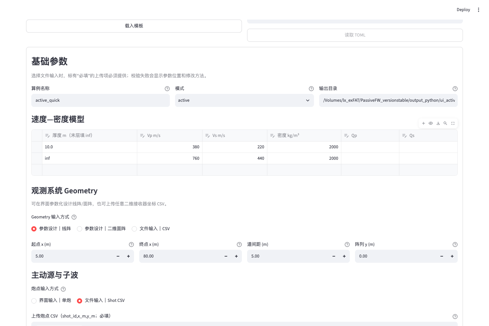
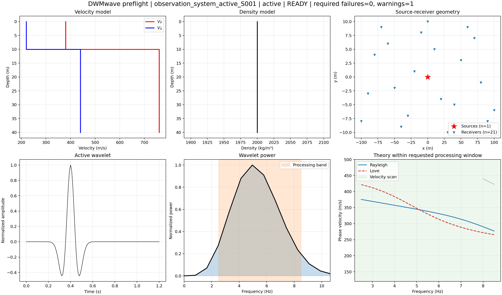
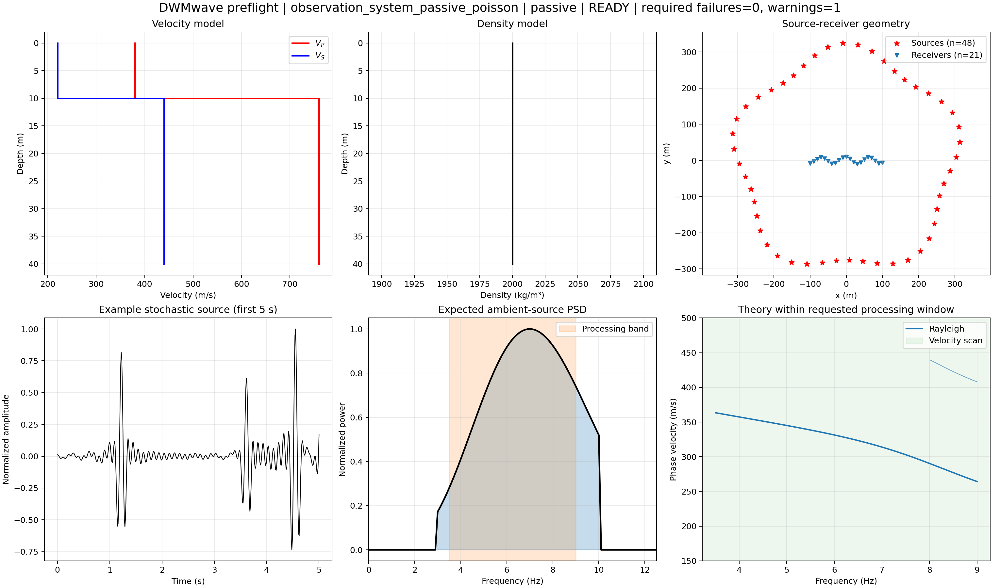
conda run -n seisloc wavedispx validate examples/observation_system/active_selected_shot.toml conda run -n seisloc wavedispx validate examples/observation_system/passive_poisson.toml
5. 被动噪声源的位置、PSD 与激发时间
空间随机性和时间随机性是两个独立问题：ambient_sources.seed 只负责参数化源位置；noise.seed 负责有限记录中的随机波形或离散事件。文件输入位置时，空间 seed 不改变 CSV 坐标。
| 时间模型 | 有没有离散激发时刻 | 每个独立窗怎样生成 | 运行输出 |
|---|---|---|---|
stationary_gaussian | 没有。它表示整个窗内连续存在的带限平稳随机过程。 | PSD 有效频带内生成独立复高斯系数，再乘以 PSD 振幅谱并做 iFFT。 | 保存混合记录和 NCF，不生成事件目录。 |
poisson_ricker | 有。每个源、每个窗都有随机事件数和时刻。 | N~Poisson(λTw)；τ~Uniform(0,Tw)；极性 ±1，权重 0.5–1.0。 | 额外保存 noise_events.csv 和 results.h5/noise_events/。 |
第 w 个窗、第 s 个源： Nₛw ~ Poisson(event_rate_hz × window_s) τₙ ~ Uniform(0, window_s) t_absolute = w × window_s + τₙ Sₛw(f) = A_PSD(f) × Σₙ aₙ exp(-i 2π f τₙ)
noise.seed=314159 会固定事件数、时刻、极性和权重，因此同一配置可以逐事件复现。independent_sources=true 时每个源有独立时间函数；关闭时所有位置共享同一个时间函数，只适合相干源敏感性试验。
关键结论：程序内部不是先对每个噪声源的理论 Green 函数做互相关。所有源先传播并叠加成真实的有限时长接收器波形，源维度在混合后消失；NCF 只使用这些接收器记录。
本例实际输出的事件表
| window_index | source_index / 坐标 | 窗内时刻 | 绝对时刻 | weight |
|---|---|---|---|---|
| 0 | 0 / (303.612, 9.144) m | 5.098369 s | 5.098369 s | -0.834707 |
| 0 | 0 / (303.612, 9.144) m | 4.549180 s | 4.549180 s | +0.936035 |
| 0 | 1 / (313.908, 50.983) m | 0.853924 s | 0.853924 s | -0.666318 |
这个 48 源、120 s 算例用于解释输入与事件机制，不是高收敛生产参数。要获得本手册后面那种连续、干净的被动频散，应采用 192–384 个源和 600–1800 s 的独立窗叠加。
6. 本手册的四案例矩阵
| 案例 | 接收器 | 源/记录 | 频散方法 | 最终质量 |
|---|---|---|---|---|
| 主动 + 线阵 | 200 台，199 m | Ricker 20 Hz，双分量 | Hankel/FJ，5–50 Hz | Rayleigh MAE 1.94 m/s；Love 1.25 m/s |
| 主动 + 面阵 | 21×21，441 台，282.8 m | Ricker 20 Hz，双分量 | Hankel/FJ，5–50 Hz | Rayleigh MAE 1.84 m/s；Love 1.12 m/s |
| 被动 + 线阵 | 121 台，600 m | 384 源，1800 s，90 窗 | Phase shift，5–18.8 Hz | Rayleigh MAE 0.80 m/s；无歧义频点 |
| 被动 + 面阵 | 21×21，441 台，565.7 m | 384 源，1200 s，60 窗 | Phase shift，5–18.8 Hz | Rayleigh MAE 0.84 m/s；无歧义频点 |
四个案例使用相同两层模型：上层厚 10 m，Vp/Vs/ρ = 380/220/2000；半空间为 760/440/2000。这样 Geometry 和源类型的差别不会与模型差别混在一起。
7. 主动源 + 线阵
| Geometry | x=1–200 m，Δx=1 m，y=0；200 台；炮点 (0,0) | 源 | vertical + horizontal；Ricker 20 Hz；fmax=100 Hz；dt=0.001 s |
|---|---|---|---|
| 处理 | Hankel/FJ；5–50 Hz；100–500 m/s；dc=1 m/s | 高级 | workers=自动；频率块 16；径向 Green 插值 0.5 m |
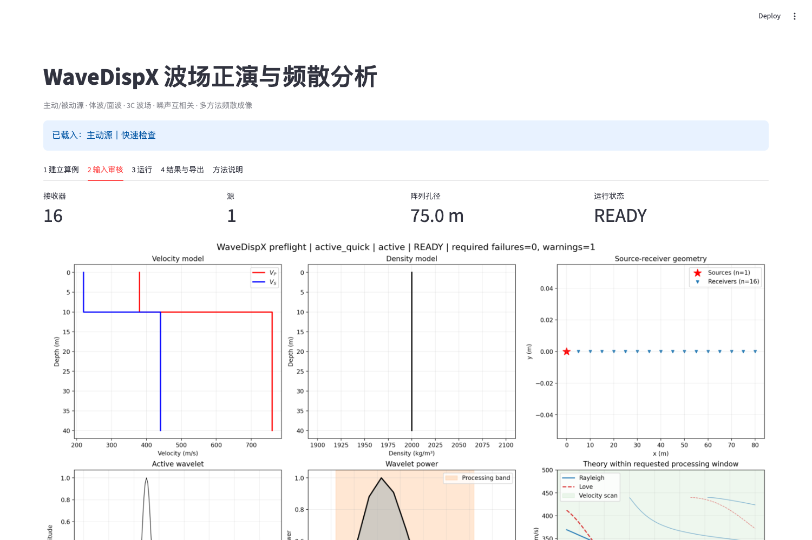
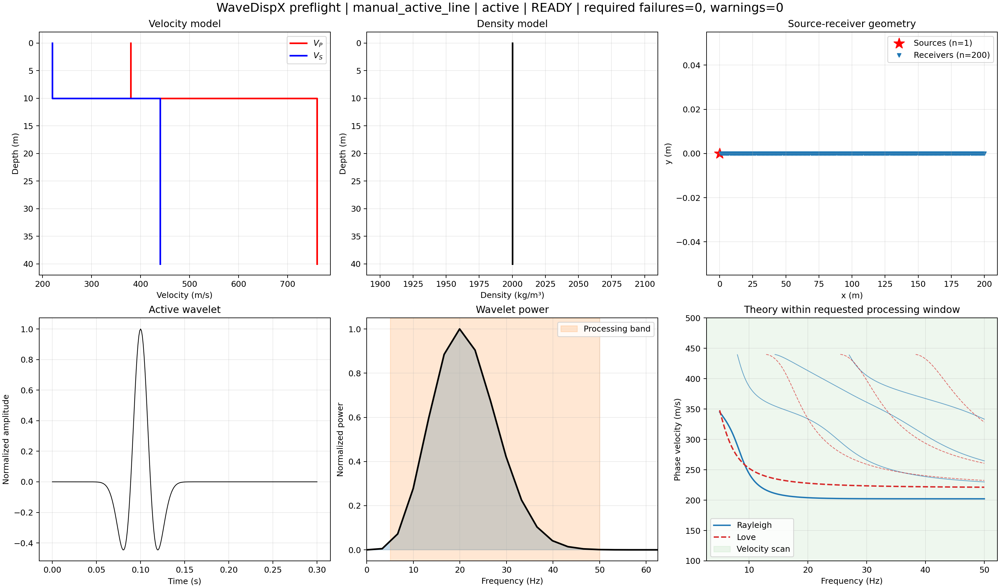
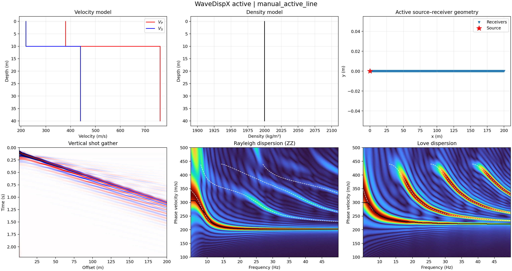
结果解释：线阵 1 m 采样能够支持 50 Hz 上限；Hankel/FJ 图中的重复弧形能量包含理论高阶模态和有限孔径旁瓣，基阶拾取与理论曲线的 MAE 小于 2 m/s。
8. 主动源 + 二维面阵
| Geometry | x=5–205 m、y=-100–100 m；Δx=Δy=10 m；21×21=441 台 | 径向采样 | 炮点 (0,0)；唯一径向源距 194 个；中位间隔约 0.91 m |
|---|---|---|---|
| 源 | 双分量 Ricker 20 Hz；fmax=100 Hz；dt=0.001 s | 处理 | Hankel/FJ；5–50 Hz；100–500 m/s；dc=1 m/s |
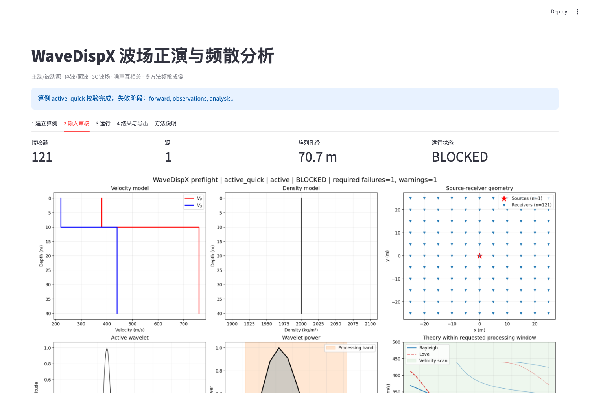

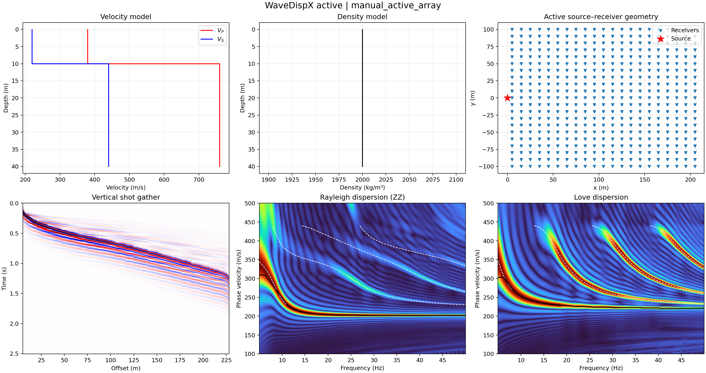
为什么 10 m 网格仍能得到密集径向采样：二维网格中存在大量不同的 √(x²+y²) 源距；本例 441 台产生 194 个唯一径向偏移，径向间隔的中位数约 0.91 m。
9. 被动源 + 线阵
| Geometry | x=-300–300 m，Δx=5 m；121 台；孔径 600 m | 噪声源 | 384 个竖直随机源；800–1200 m 源环；分层方位采样；seed=42 |
|---|---|---|---|
| 有限记录 | stationary Gaussian；1800 s；dt=0.005 s；20 s 窗；90 个独立窗 | PSD / 处理 | Ricker PSD，3–18.8 Hz，主频 12 Hz；白化；phase shift；taper=0.5 |
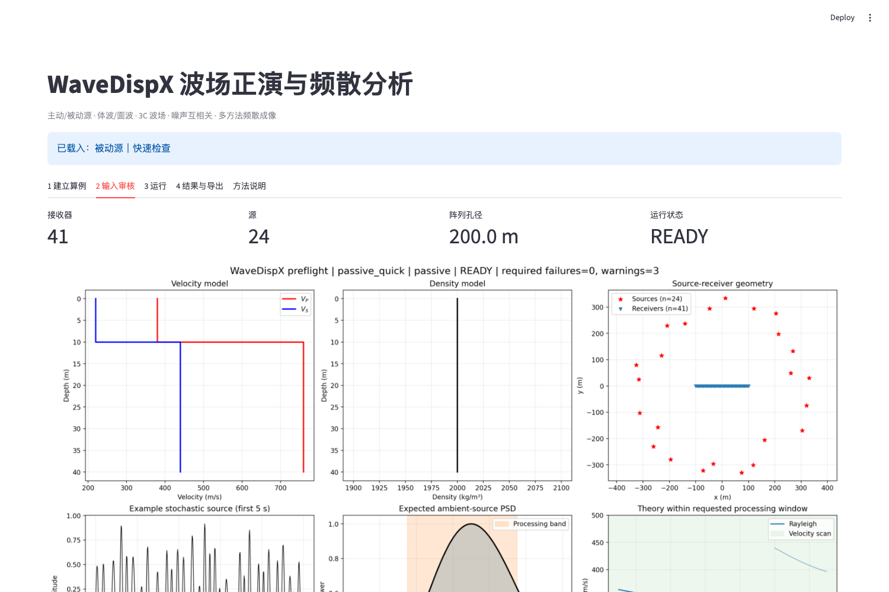
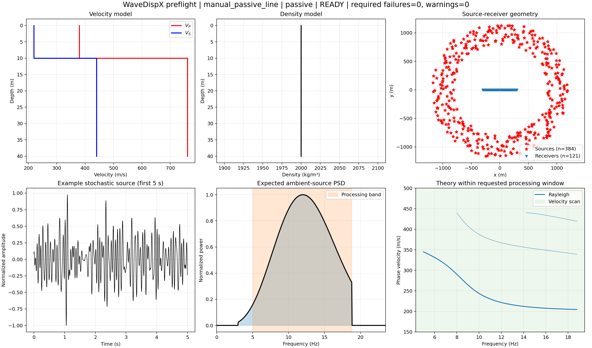
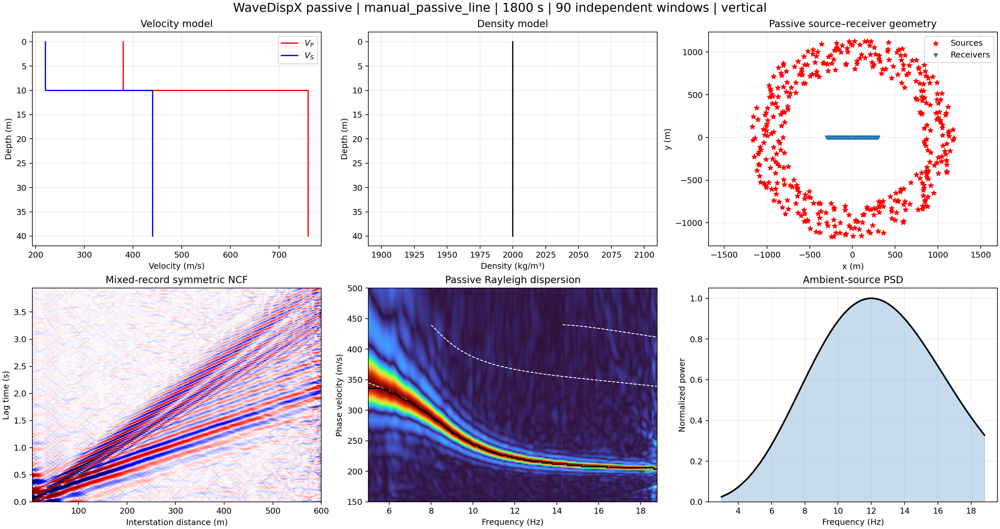
这是高收敛被动示例：60 s 只有 3 个窗时频散相对最终图 L2 差异为 0.635；600 s/30 窗降到 0.149；1800 s/90 窗作为最终参考，拾取 MAE 为 0.80 m/s。
这里不是逐源理想 Green 互相关。程序先为每个噪声源生成独立有限时长随机过程，经 Green 传递函数传播后在每个接收器混合，再仅从混合接收器波形分窗计算 NCF。
10. 被动源 + 二维面阵
| Geometry | x/y=-200–200 m；Δx=Δy=20 m；21×21=441 台；孔径 565.7 m | 径向分箱 | distance_bin=5 m；台站对按距离归并后做 phase shift |
|---|---|---|---|
| 噪声源 | 384 个竖直源；800–1200 m 源环；分层方位采样 | 有限记录 | 1200 s；dt=0.01 s；20 s 窗；60 个独立窗；Ricker PSD 3–18.8 Hz |

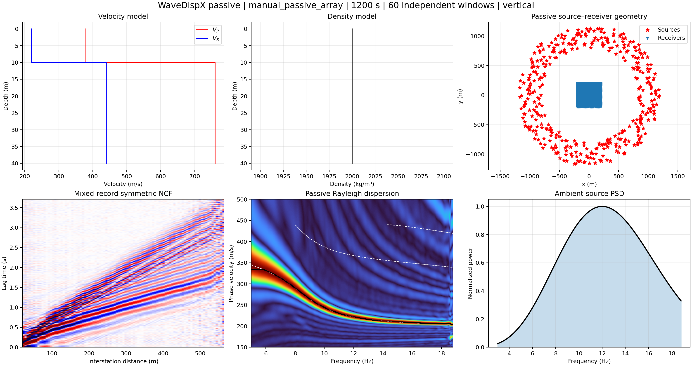
为什么这版比 11×11 面阵好：接收器从 121 台加密到 441 台，台站对从 7,260 增至 97,020，径向箱从 10 m 缩小为 5 m。频散图的基阶更窄、更连续，MAE 从视觉异常案例改善到 0.84 m/s。
计算代价：面阵 NCF 需要处理大量台站对。本机此例约 315 s、峰值内存约 1.60 GiB；时间明显高于被动线阵，属于换取径向覆盖的真实成本。
11. 物理三分量高阶模态基准
| 模型 | 5 m：Vp/Vs/ρ=340/180/1850；15 m：560/300/2000；半空间：1050/600/2200 | 目的 | 把多个高阶截止频率放入 3–28 Hz，并增强 RR 对高阶 Rayleigh 的耦合。 |
|---|---|---|---|
| 主动 | 165 台，2 m 道距，双分量 Ricker；联合 RR/ZR/RZ/ZZ | 被动 | 133 台，3 m 道距；192 个 Fx/Fy/Fz 源；1800 s/90 窗；RR/TT/ZZ NCF |
| 方法 | 主方法保留 Hankel（主动）和 phase-shift（被动），同时输出 Bessel/FJ 与另外两种方法对照。 | ||
3C 不是后处理造能量：每个噪声源先产生独立全局 Fx/Fy/Fz；按每个源—接收器方位分解为 Fr/Ft，用 RR/TT/ZR/RZ/ZZ Green 张量传播并旋回 X/Y/Z。互相关阶段只看混合接收记录；二维阵列还会针对每一个台站对重新旋成 RR/TT。


定量结果：主动联合图第二条高阶的中位归一化能量约 0.51，约 69% 有效频点高于 0.35；RR 单分量对该阶的支持率约 96%，ZZ 为 0%。被动 1800 s 中，600→1800 s 的 NCF 相对 L2 为 0.163、频散图为 0.223，说明基本阶已稳而高阶仍受物理激发与有限孔径限制。
12. DAS 面阵与逐通道真实光缆
| 规则面阵 | 11×11=121 个中心；每个中心放置 8 m、0° 的平行标距 | 真实光缆 | 15 道折线；逐道 6–8 m 标距；方向含 0°/45°/90° |
|---|---|---|---|
| 主动 | 真实计算每道两个端点的水平位移 Green，投影作差后除以该道标距 | 被动 | DAS 算子先作用于源—通道传递，再生成有限记录，最后做 DAS–DAS NCF |
| 测量/成像 | strain 或 strain_rate；当前 DAS 只走保幅 phase-shift，不把节点 ZZ 的 FJ/Hankel 静默套用到 DAS | ||
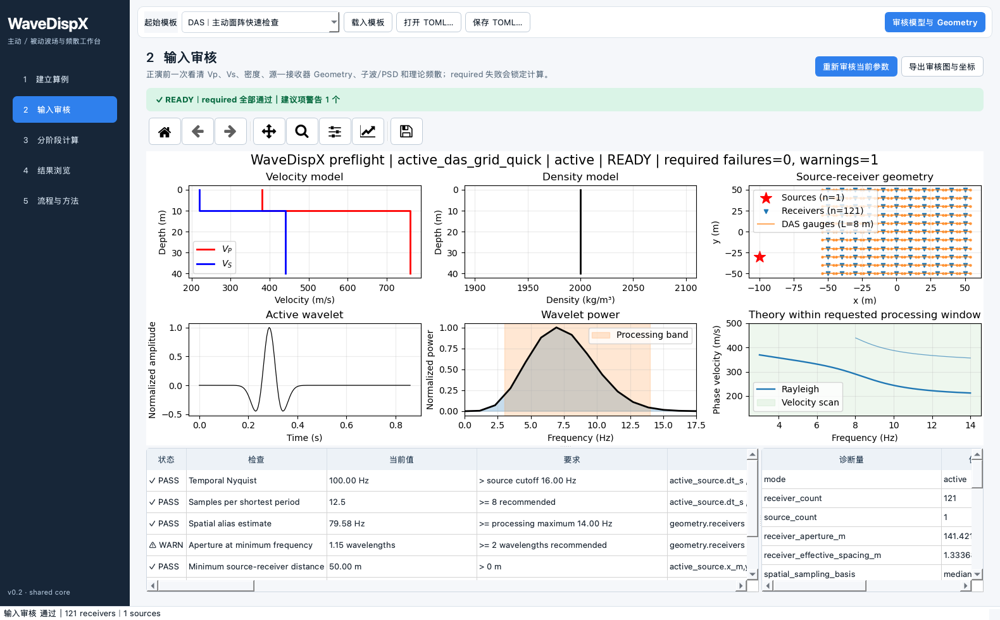


das_channels.csv，可直接再次输入。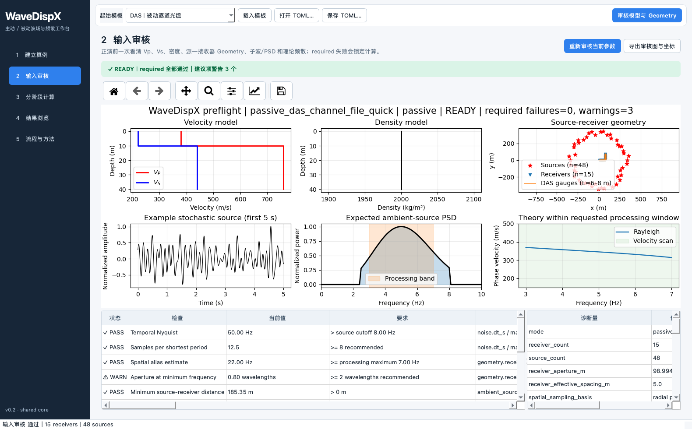

逐道光缆 CSV 两种格式
文件始终包含 x_m,y_m。可再给 endpoint_minus_x_m, endpoint_minus_y_m, endpoint_plus_x_m, endpoint_plus_y_m；或者给 gauge_length_m,fiber_azimuth_deg。若两套列同时存在，以端点为准；程序检查端点中点与通道中心一致、标距为正且 channel_id 唯一。
物理边界：当前仍是一维水平层状介质、地表水平离散测量段和竖直点力。规则二维面阵不代表二维介质；逐道折线不代表连续光纤力学；井中 DAS、地形、三维介质和 DAS 专用 FJ/Hankel 尚未验证。
13. 结果比较与方法选择
| 问题 | 结论 |
|---|---|
| 主动源用什么成像？ | 四案例中的主动源使用 Hankel/FJ。它利用柱面波径向结构，Rayleigh 和 Love 都可计算。 |
| 被动源用什么成像？ | 被动 NCF 使用 phase shift：对径向距离道集按候选相速度补偿相位并叠加。 |
| 背景噪声是否内部互相关？ | 是。先混合所有源形成有限时长接收器记录，再对接收器记录分窗做互相关/互谱叠加；不是直接拿逐源理论 Green 相关冒充数据。 |
| 为什么被动线阵比快速模板好？ | 384 个方位分层源 + 1800 s/90 窗，使非相干波动衰减；快速模板的 24 源/60 s 只用于验通。 |
| 面阵为什么慢？ | 接收器数增加会使台站对近似按 N² 增长；441 台对应 97,020 个唯一台站对。 |
| 图中的旁瓣都是假频吗？ | 不是。部分是有限孔径和离散距离采样产生的成像旁瓣，部分可对应理论高阶模态。应看理论曲线、拾取误差、脊集中度和收敛表共同判断。 |
14. 运行、复现与导出
界面运行
- 在“建立算例”上传本手册对应的 TOML，点击“读取 TOML”。
- 点击“校验并绘制输入”，切到“输入审核”，确认 READY 和六联图。
- 第一次按 1→2→3→4 分阶段运行；稳定后可使用“一键运行全部”。
- 在“结果与导出”下载完整 TOML、拾取、收敛表和 manifest。
命令行全盘执行
conda run -n seisloc wavedispx run examples/manual_active_line.toml conda run -n seisloc wavedispx run examples/manual_active_array.toml conda run -n seisloc wavedispx run examples/manual_passive_line.toml conda run -n seisloc wavedispx run examples/manual_passive_array.toml PYTHONPATH=python_src conda run -n seisloc wavedispx run examples/active_das_grid_quick.toml PYTHONPATH=python_src conda run -n seisloc wavedispx run examples/active_das_channel_file_quick.toml PYTHONPATH=python_src conda run -n seisloc wavedispx run examples/passive_das_channel_file_quick.toml
输出文件说明
input.toml 为可复现输入；results.h5 保存波形/NCF/频散矩阵；receivers.csv 与 sources.csv 保存本次实际使用的 Geometry；DAS 另存包含真实端点、逐道标距和方位的 das_channels.csv；picked_*.csv 为拾取；convergence.csv 为被动时长收敛；Poisson 模型额外输出 noise_events.csv；manifest.json 保存运行时间、内存和质量指标。建议交付给频散项目的最小包：TOML + receivers.csv + sources.csv + results.h5 + manifest.json。这样对方既能读取原始/NCF 道集，也能核对模型、Geometry、源与处理参数。